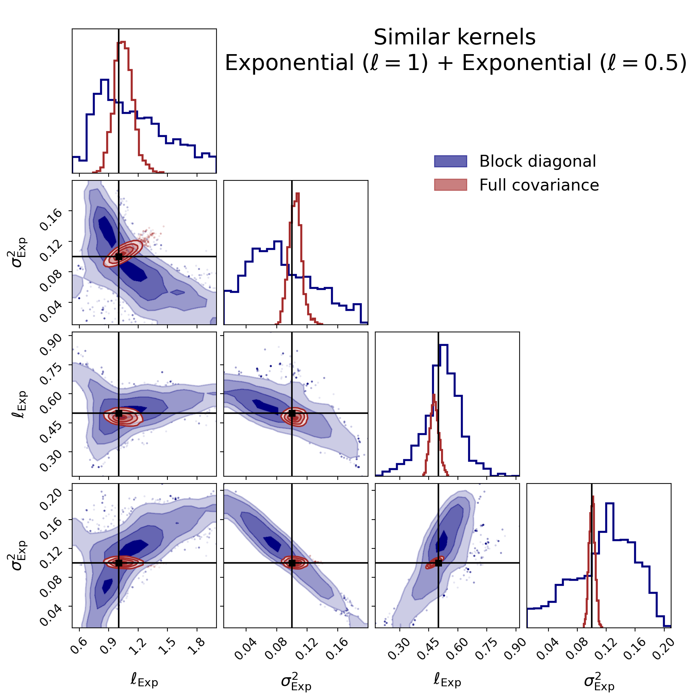
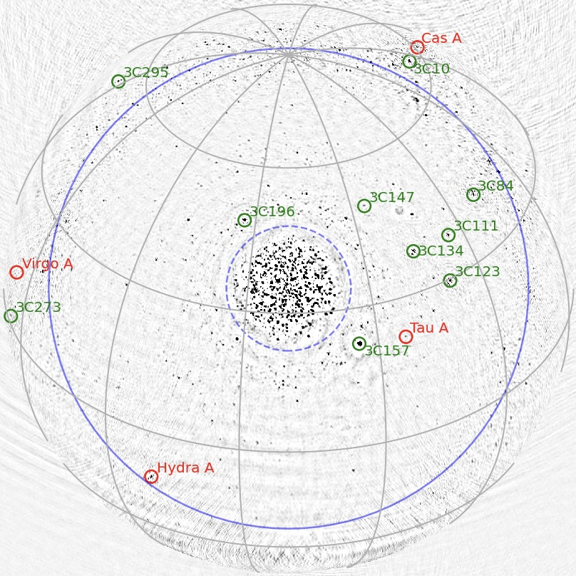
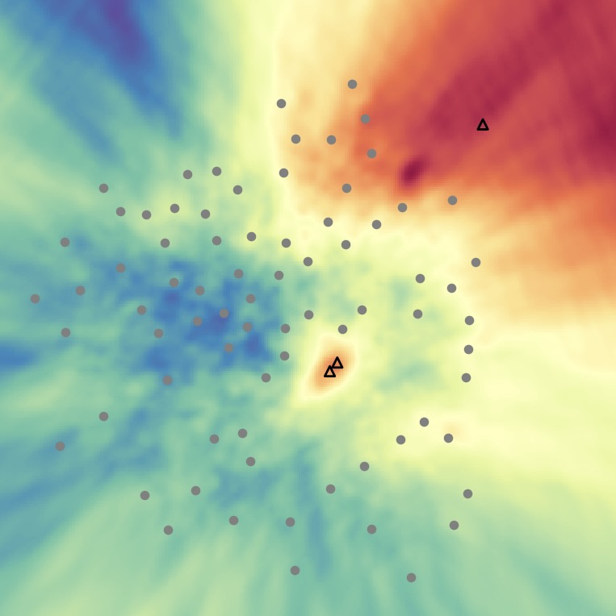
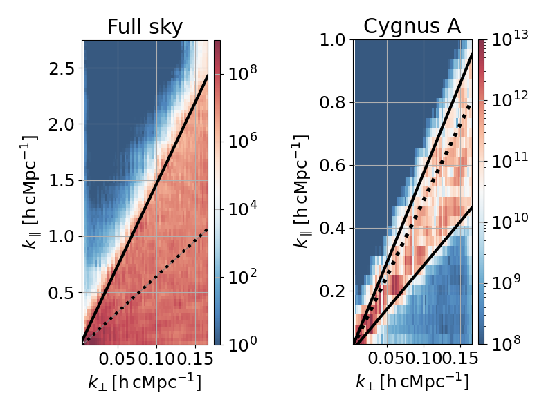
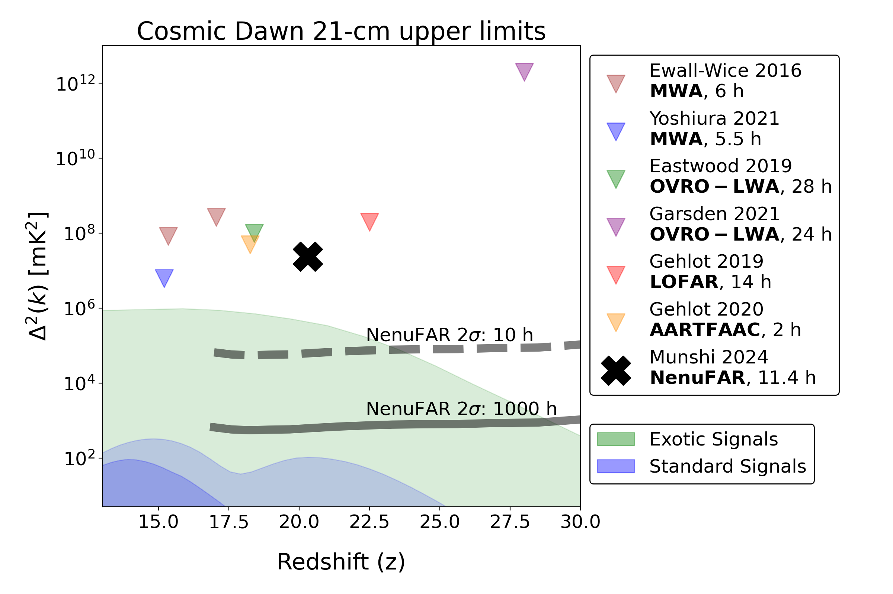
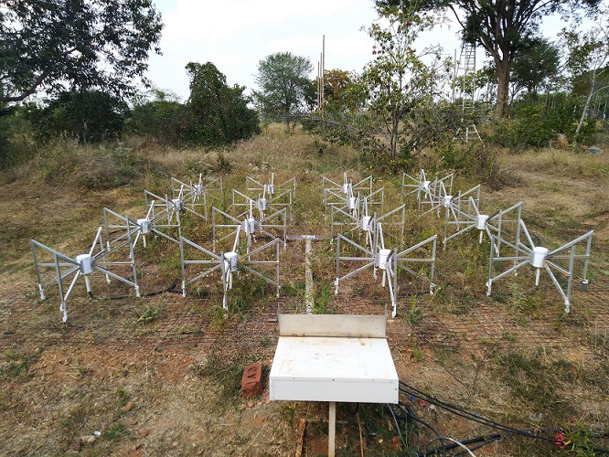
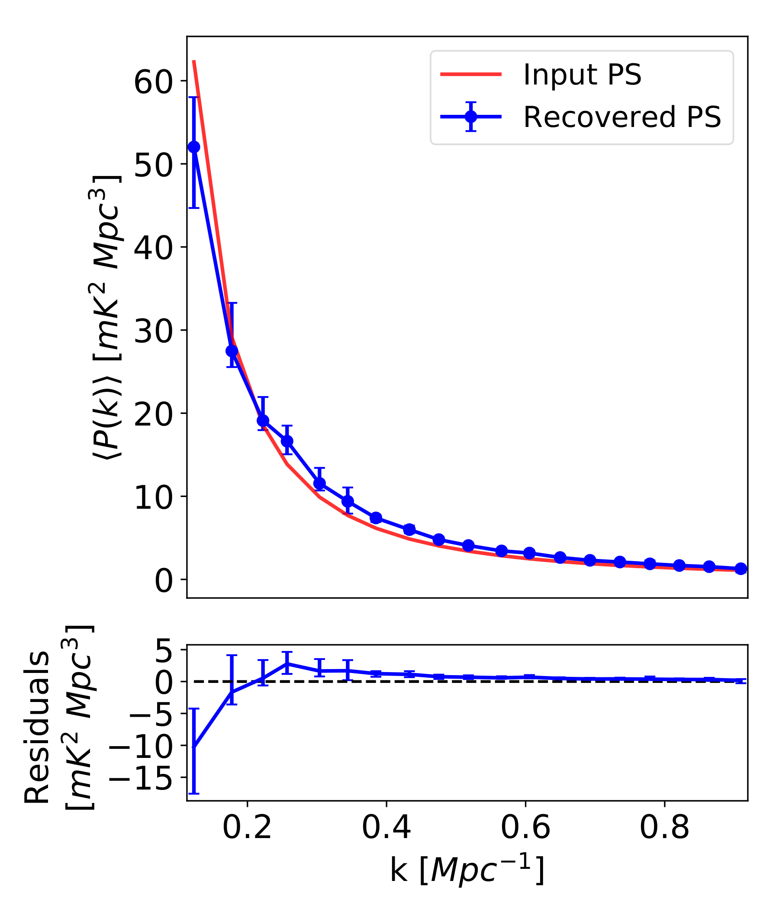
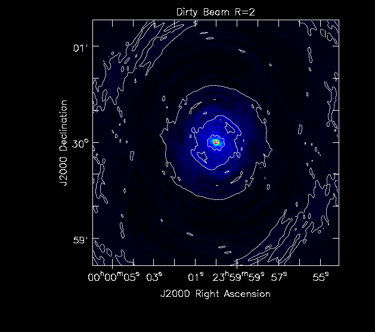
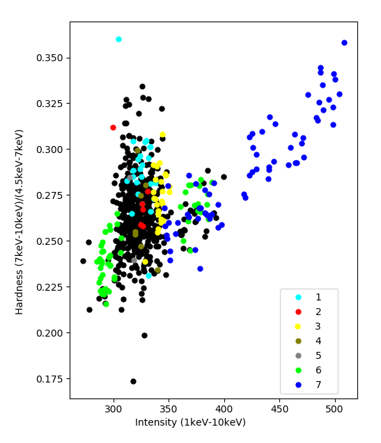
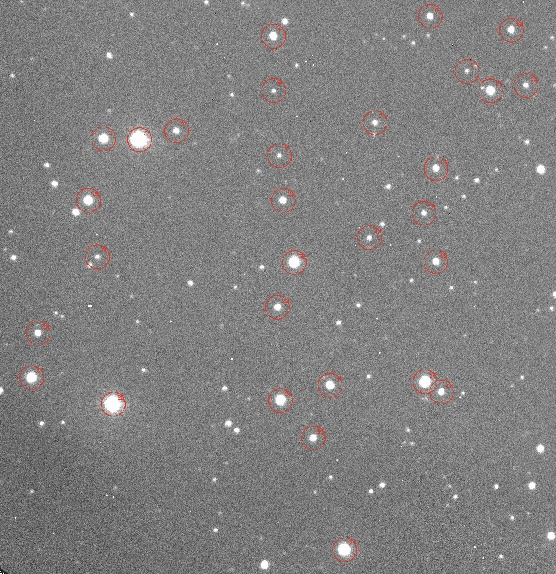

I am Satyapan, a researcher in radio astronomy and 21-cm cosmology.
I am currently a postdoctoral fellow at Mount Stromlo Observatory of the Australian National University. I work with the MWA EoR project, which aims to detect the redshifted 21-cm signal from the Epoch of Reionization using the Murchison Widefield Array. My research focuses on developing methods to bridge the gap between observations and theory in 21-cm cosmology.
Before moving to Australia, I completed my PhD at the Kapteyn Astronomical Institute in the Netherlands, working with Prof. Léon Koopmans on constraining the Cosmic Dawn 21-cm signal using NenuFAR. My doctoral research also involved studying foreground contamination, and developing algorithms for radio-frequency interference modeling and 21-cm signal-separation.
I previously obtained my Bachelor’s and Master’s degrees from the Indian Institute of Science Education and Research (IISER) Mohali, with a major in physics and a minor in astronomy. For my Master’s thesis, supervised by Prof. Jasjeet Singh Bagla, I worked on HI intensity mapping with the upgraded GMRT.
Outside of research, I enjoy playing racket sports, singing, and playing musical instruments, especially the piano. I also like exploring different approaches to explaining concepts in physics and occasionally write about some topics here.
Research
You can find a list of my publications
here.
Listed below are the projects I have led.
Ongoing Projects

Using night-to-night coherence in 21-cm signal separation
The standard approach to retrieving the 21-cm signal uses the frequency smoothness of the foregrounds to separate them from the signal.
If instrumental systematics do not have a smooth spectral signature, they cannot be separated from the 21-cm signal.
In this project, we developed an extension to Gaussian process regression (GPR) based 21-cm signal separation, which uses the fact that the
21-cm signal is coherent across multiple nights of observation to separate it from time-incoherent contributions from instrumental systematics.
Paper.
Completed Projects

Improved upper limits from observing a new field with NenuFAR
We analyzed four nights of observations of an optimal field with NenuFAR, selected carefully to minimize contamination from bright radio sources. This analysis resulted in the strongest upper limits to date on the 21-cm power spectrum during the Cosmic Dawn, with the upper limits approaching astrophysically relevant exotic signal models during the Cosmic Dawn for the first time.
Paper.

Near field imaging of local RFI
We developed two near-field imaging algorithms to make three-dimensional maps of local RFI from radio interferometric data. These algorithms were used to model local RFI near NenuFAR, and study the impact of terrestrial RFI on far-field images, uv plane and the 21-cm power spectrum through forward simulations.
Paper.

Quantifying the full sky foreground wedge
We derived and validated full-sky foreground wedge equations for phase tracking instruments without a flat-sky approximation. These equations give new insights into the nature of foreground contamination in the cylindrical power spectrum and show that foregrounds can extend well beyond previously thought.
Paper.

First upper limits on the 21-cm signal with NenuFAR
We performed the first end-to-end analysis of a single night of NenuFAR observations to place upper limits on the 21-cm signal power spectrum at z = 20.3. We investigated the nature of excess power beyond thermal noise affecting NenuFAR observations.
Paper.

Radio imaging with SWAN
We calibrated delays and developed a correlation + imaging pipeline for raw SWAN data, producing the first interferometric image with SWAN.
Paper.

HI intensity mapping on the EGS field with GMRT
We analyzed observations of the Extended Groth Strip with the upgraded GMRT and used the Tapered Gridded Estimator (TGE) to estimate upper limits on the 21-cm signal power spectrum, constraining ΩHIbHI at z = 0.028, 0.34, and 0.38.
Thesis.

Accurate flux measurement of extended sources
We used Jorsater & van Moorsel's approach to estimate true flux in radio interferometric images when residuals are reported in Jy/clean-beam. We tested the algorithm across different sky source models, weighting schemes and imaging parameters.
Report.

Broadband characterization of GX 17+2 using HXMT
We studied Insight-HXMT spectra across source states and found evidence of a hard tail in the horizontal and flaring branches and an iron fluorescence line which appears only in the flaring branch.
Report.

Optical and infrared variability of a high mass X-ray binary
We built an automated pipeline to construct differential light curves from optical and infrared images. Analyisis of simultaneous observations of the HMXB IGR17544-2619 showed evidence of correlation between X-ray and optical light curves.
Report.
Curriculum Vitae
Employment
-
Postdoctoral Fellow, Mount Stromlo Observatory, Australian National University (Nov 2025 – present)
Education
-
PhD in Astrophysics (cum laude), Kapteyn Institute, University of Groningen (Sep 2021 - Dec 2025)
-
BS–MS dual degree (CPI: 9.8/10), Major in Physics, Minor in Astronomy, IISER Mohali (2016-2021)
Skills and experience
- Radio interferometric pipeline development. Calibration, imaging and RFI mitigation algorithms
- Foreground mitigation, signal separation algorithms and power spectrum estimators in observational 21-cm cosmology
- Member of the NenuFAR Cosmic Dawn project, LOFAR EoR project, MWA EoR project and SKA EoR science working group
- Teaching assistant for four BSc courses on numerical methods and statistical methods in Astronomy
Publications
A full list of publications is available on
Google Scholar
.
If you would like a detailed CV, please feel free to
contact me.
Contact
You can reach me at:
{kind=link}
{kind=link}
{kind=link}
{kind=link}
{kind=link}
{kind=link}
{kind=link}
{kind=link}
{kind=link}
{kind=link}